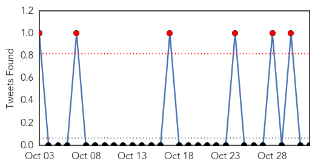
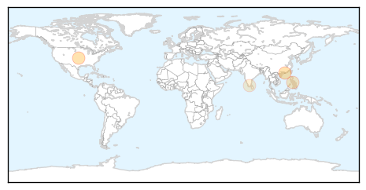

MERS
30-Day Web Trend
0 alerts, 0 warnings
30-Day Twitter Trend
3 alerts, 0 warnings

Article Locations

Article Confidences

Top Articles:
Top Tweets:
-
No tweets found for Nov 01, 2014
Dengue Fever
30-Day Web Trend
1 alerts, 0 warnings

30-Day Twitter Trend
2 alerts, 0 warnings

Article Locations
Article Confidences

Top Articles:
- 0.940
- Girl treated for dengue fever on holiday may have contracted it in city
- 0.932
- Google updates flu trends to better predict spread of illness
- 0.883
- Google to improve on US flu trend prediction
- 0.709
- Cebu News, The Freeman Sections, The Freeman
- 0.522
- Dengue drive: Corporation warns of action against building owners
Top Tweets:
-
No tweets found for Nov 01, 2014